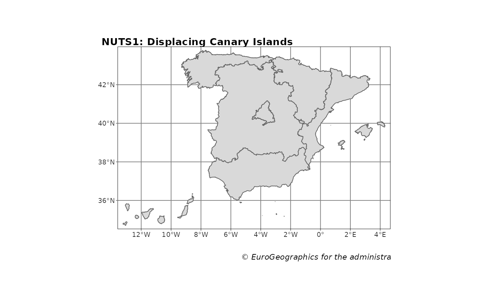
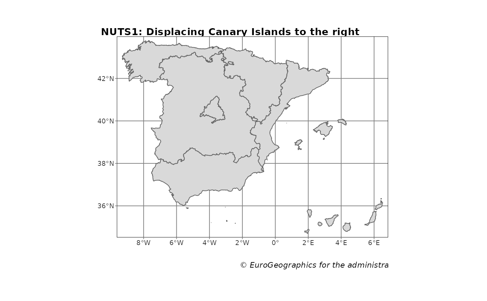
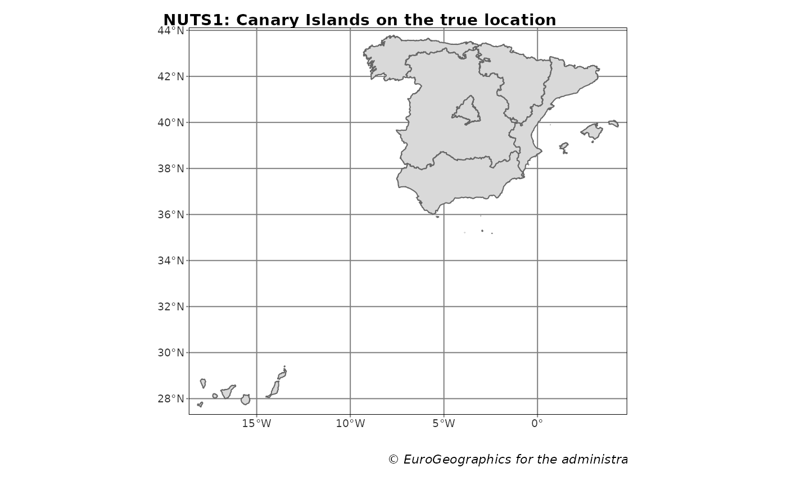
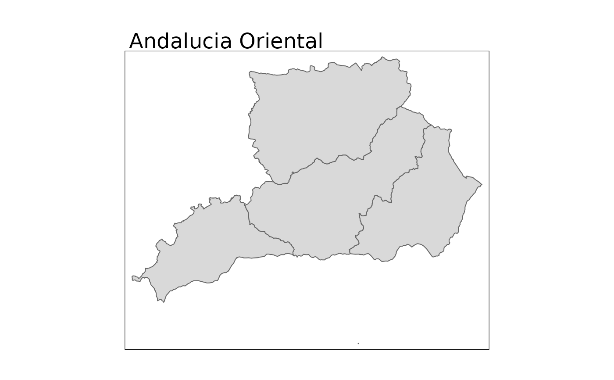
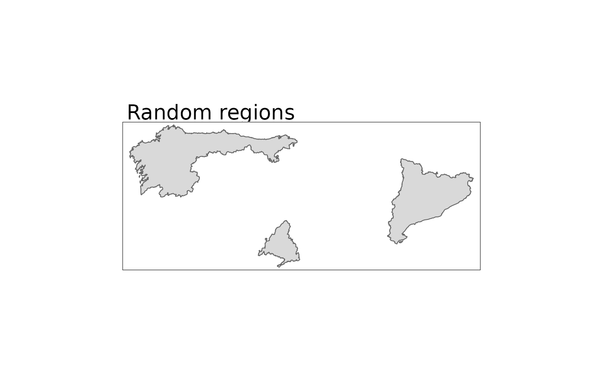
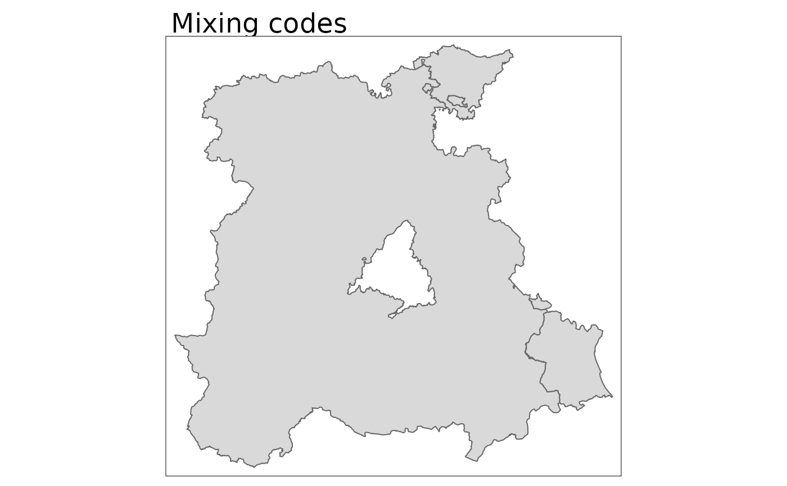

Returns NUTS regions of Spain as polygons and points at a specified scale, as provided by GISCO (Geographic Information System of the Commission, depending of Eurostat).
NUTS are provided at three different levels:
"0": Country level
"1": Groups of autonomous communities
"2": Autonomous communities
"3": Roughly matches the provinces, but providing specific individual objects for each major island
esp_get_nuts( year = "2016", epsg = "4258", cache = TRUE, update_cache = FALSE, cache_dir = NULL, verbose = FALSE, resolution = "01", spatialtype = "RG", region = NULL, nuts_level = "all", moveCAN = TRUE )
Arguments
| year | Release year of the file. One of |
|---|---|
| epsg | projection of the map: 4-digit EPSG code. One of:
|
| cache | A logical whether to do caching. Default is |
| update_cache | A logical whether to update cache. Default is |
| cache_dir | A path to a cache directory. See About caching. |
| verbose | Logical, displays information. Useful for debugging,
default is |
| resolution | Resolution of the geospatial data. One of
|
| spatialtype | Type of geometry to be returned:
|
| region | Optional. A vector of region names, NUTS or ISO codes
(see |
| nuts_level | NUTS level. One of "0" (Country-level), "1", "2" or "3". See Description. |
| moveCAN | A logical |
Source
Value
A sf object specified by spatialtype.
Note
Please check the download and usage provisions on
giscoR::gisco_attributions()
About caching
You can set your cache_dir with esp_set_cache_dir().
Sometimes cached files may be corrupt. On that case, try re-downloading
the data setting update_cache = TRUE.
If you experience any problem on download, try to download the
corresponding .geojson file by any other method and save it on your
cache_dir. Use the option verbose = TRUE for debugging the API query.
Displacing the Canary Islands
While moveCAN is useful for visualization, it would alter the actual
geographic position of the Canary Islands. When using the output for
spatial analysis or using tiles (e.g. with esp_getTiles() or
addProviderEspTiles()) this option should be set to FALSE in order to
get the actual coordinates, instead of the modified ones.
See also
giscoR::gisco_get_nuts(), esp_dict_region_code().
Other political:
esp_codelist,
esp_get_can_box(),
esp_get_capimun(),
esp_get_ccaa(),
esp_get_country(),
esp_get_gridmap,
esp_get_munic(),
esp_get_prov()
Other nuts:
esp_nuts.sf
Examples
NUTS1 <- esp_get_nuts(nuts_level = 1, moveCAN = TRUE) library(tmap) tm_shape(NUTS1) + tm_graticules() + tm_polygons() + tm_credits(giscoR::gisco_attributions(), fontface = "italic", size = 0.7 ) + tm_layout( main.title = "NUTS1: Displacing Canary Islands", main.title.size = 0.9, main.title.fontface = "bold", attr.outside = TRUE )
NUTS1_alt <- esp_get_nuts(nuts_level = 1, moveCAN = c(15, 0)) tm_shape(NUTS1_alt) + tm_graticules() + tm_polygons() + tm_credits(giscoR::gisco_attributions(), fontface = "italic", size = 0.7 ) + tm_layout( main.title = "NUTS1: Displacing Canary Islands to the right", main.title.size = 0.9, main.title.fontface = "bold", attr.outside = TRUE )
NUTS1_orig <- esp_get_nuts(nuts_level = 1, moveCAN = FALSE) tm_shape(NUTS1_orig) + tm_graticules() + tm_polygons() + tm_credits(giscoR::gisco_attributions(), fontface = "italic", size = 0.7 ) + tm_layout( main.title = "NUTS1: Canary Islands on the true location", main.title.size = 0.9, main.title.fontface = "bold", attr.outside = TRUE )
AndOriental <- esp_get_nuts(region = c("Almeria", "Granada", "Jaen", "Malaga")) qtm(AndOriental, main.title = "Andalucia Oriental")
RandomRegions <- esp_get_nuts(region = c("ES1", "ES300", "ES51")) qtm(RandomRegions, main.title = "Random regions")
MixingCodes <- esp_get_nuts(region = c("ES4", "ES-PV", "Valencia")) qtm(MixingCodes, main.title = "Mixing codes")
Site built with pkgdown 1.6.1.
Template by Bootstrapious . Ported to pkgdown by dieghernan.